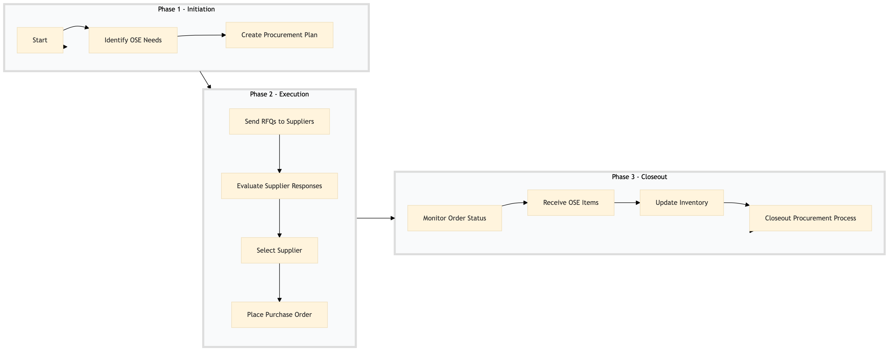

| Role | Steps |
|---|---|
| Procurement Manager | 1.1 1.2 2.1 2.2 2.3 2.4 3.1 3.4 |
| Receiving Agent | 3.2 3.3 |
| Step | Name | Role | System | Input | Output | KPI | Dec? | Exc? | Pain Point / Risk |
|---|---|---|---|---|---|---|---|---|---|
| 1.1 | Identify OS&E Needs | Procurement Manager | Oracle OPERA Cloud, IDeaS G3 RMS | Inventory reports, usage data | OS&E needs list | Less than 2 hours | N | Y | Accurate forecasting of OS&E needs can be challenging due to variable guest demands. |
| 1.2 | Create Procurement Plan | Procurement Manager | Birchstreet Procurement, Oracle OPERA Cloud | OS&E needs list | Procurement plan with suppliers and budgets | Less than 1 day | N | Y | Balancing cost and quality can be difficult when selecting suppliers. |
| 2.1 | Send RFQs to Suppliers | Procurement Manager | Birchstreet Procurement, Oracle OPERA Cloud | Procurement plan with supplier details | RFQ documents sent to suppliers | Less than 1 day | N | Y | Ensuring all required information is included in RFQs can be time-consuming. |
| 2.2 | Evaluate Supplier Responses | Procurement Manager | Birchstreet Procurement, Oracle OPERA Cloud | Supplier responses to RFQs | Supplier evaluation report | Less than 2 days | Y | Y | Comparing multiple supplier quotes and quality can be complex. |
| 2.3 | Select Supplier | Procurement Manager | Birchstreet Procurement, Oracle OPERA Cloud | Supplier evaluation report | Selected supplier and contract details | Less than 1 day | N | Y | Finalizing the selection based on cost, quality, and service can be challenging. |
| 2.4 | Place Purchase Order | Procurement Manager | Birchstreet Procurement, Oracle OPERA Cloud | Selected supplier and contract details | Purchase order sent to supplier | Less than 1 day | N | Y | Ensuring all necessary information is included in the purchase order can be time-consuming. |
| 3.1 | Monitor Order Status | Procurement Manager | Birchstreet Procurement, Oracle OPERA Cloud | Purchase order details | Order status updates | Less than 2 days | Y | Y | Tracking the delivery and ensuring timely receipt can be difficult. |
| 3.2 | Receive OS&E Items | Receiving Agent | Oracle OPERA Cloud, IDeaS G3 RMS | OS&E items delivered by supplier | Inventory update in Oracle OPERA Cloud | Less than 1 day | N | Y | Verifying the quantity and quality of received items can be time-consuming. |
| 3.3 | Update Inventory | Receiving Agent | Oracle OPERA Cloud, IDeaS G3 RMS | Received OS&E items details | Updated inventory levels in Oracle OPERA Cloud | Less than 1 day | N | Y | Updating multiple systems with accurate inventory data can be challenging. |
| 3.4 | Closeout Procurement Process | Procurement Manager | Birchstreet Procurement, Oracle OPERA Cloud | Final order status and inventory update | Completed procurement process documentation | Less than 1 day | N | Y | Ensuring all final documentation is accurate and complete can be time-consuming. |
The FN-PR-05 process is responsible for procurement of operating supplies and equipment (OS&E) at a Marriott full-service hotel. This ensures that the hotel maintains its operational efficiency and guest satisfaction through timely and cost-effective acquisition of necessary items.